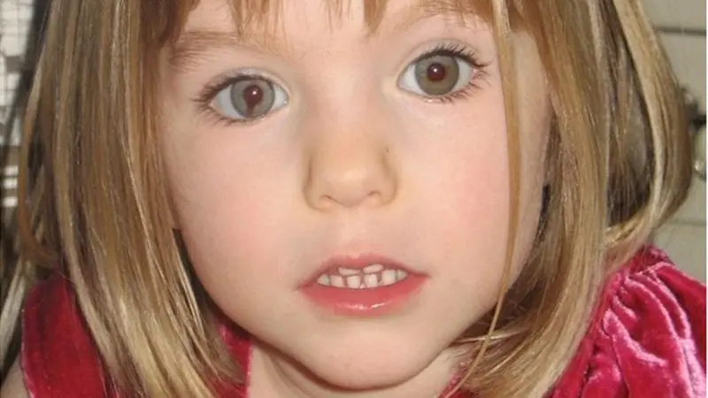

otras noticias
- Cómo un viaje a Noruega me hizo ver que estaba equivocado y que la Tierra no es plana
- Las imágenes falsas creadas con IA para intentar atraer el apoyo de los votantes negros hacia Trump
- La princesa Kate pide disculpas por la "confusión" que causó su foto retirada por las agencias de noticias por inconsistencias
- El Yimeilun, la estrategia con la que China busca influir en las elecciones de Taiwán al sembrar dudas sobre su alianza con EE.UU.
- Las afirmaciones falsas y engañosas amplificadas por Elon Musk en Twitter
- Donald Trump: cómo detectar imágenes creadas por inteligencia artificial como las fotos falsas del arresto del expresidente
- Los sobrevivientes de ataques terroristas que son acusados de fingir por teóricos de la conspiración
- Quiénes son los "Ciudadanos del Reich", el grupo asociado con los golpistas arrestados en Alemania
- LOS DIABÓLICOS ORÍGENES DE LAS TEORÍAS DE CONSPIRACIÓN (Y EL REY FRANCÉS QUE CREÓ UNA DE LAS MÁS EXITOSAS DE TODOS LOS TIEMPOS)
- LA MATANZA QUE LOS SOVIÉTICOS ATRIBUYERON CON ÉXITO A LOS NAZIS DURANTE 50 AÑOS
- RUSIA INVADE UCRANIA: CÓMO SABER SI LO QUE ESTÁS VIENDO SOBRE EL CONFLICTO ES REAL O SON "FAKE NEWS"
“Me arrepiento de haber publicado en línea que yo era Madeleine McCann”

Mientras Julia Wandelt toca la guitarra en su habitación en Polonia, nos rodean ositos de peluche. Uno es de color rosa brillante y lleva una camiseta que dice: "You got this!" (¡Lo tienes!).
Fue un regalo, dice la joven de 22 años, de algunos de sus nuevos seguidores. Los conoció después de crear una cuenta de Instagram llamada @iammadeleinemccan, en referencia a la niña británica que desapareció en Portugal en 2007 pero a la que le faltaba la "n" final de su apellido.
La desaparición de Madeleine McCann a la edad de tres años, que sigue sin resolverse, es una de las más reportadas de la historia.
Las comunidades en línea de personas obsesionadas con el caso han crecido, y la cuenta de Julia fue como arrojar gasolina al fuego que ya ardía en sitios de redes sociales como Instagram, TikTok y X.
"Nunca quise lastimar a nadie, incluidos [los] McCann", me dijo. "Realmente quería saber quién soy".
Si tuviera que retroceder en el tiempo, Julia dice que nunca habría creado el perfil de Madeleine McCann.
"Nunca hubiese entrado en las redes sociales. Te pueden destruir", afirmó.
¿Por qué me odias?
Estoy rastreando a falsificadores, teóricos de la conspiración, imitadores y gente perjudicada por internet con la intención de descubrir por qué algunas personas se comportan como lo hacen en las redes sociales. Todo para una serie de podcasts de BBC Radio 4 llamada "¿Por qué me odias?".
Empiezo por Julia, porque su caso me pareció uno de los más extraordinarios que he conocido.
La cuenta original en la que publicó como Madeleine a principios de 2023 ya no existe. Pero entre los grupos online obsesionados con la niña había uno dedicado a analizar las publicaciones de Julia en las redes sociales, que es donde encontré su cuenta personal.
Después de que le envié un mensaje, Julia me dijo que quería compartir su versión de los hechos. Debido a que ha hablado abiertamente sobre sus luchas pasadas con su salud mental, conversamos varias veces por teléfono durante varias semanas, además de reunirnos en persona, para que pudiéramos estar seguros de que estaba tomando una decisión informada antes de hablar.
Nos conocimos por primera vez en su departamento en Polonia. Cuando llegué, fui recibida por un fuerte maullido de su gato, Monty. Ahora, en lugar de publicar sobre el caso de Madeleine McCann, ella suele compartir videos del animal haciendo trucos.